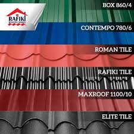

Mabati & Steel Enterprises Limited
The company is a manufacturer and supplier of a diverse pool of roofing materials that include corrugated iron sheets, high grid aluminium and steel roofing.
Roofing materials are critical in covering roofs of buildings. More importantly, there are different types of such materials that include iron, steel, and aluminium galvanised sheets.
The company is a manufacturer and supplier of a diverse pool of roofing materials that include corrugated iron sheets, high grid aluminium and steel roofing.
The company is the only manufacturer of roofing sheets in Nairobi. It is part of the DevKi Group of companies. Its diverse pool of products include Maisha Alu-Zinc mabati, Maisha mabati, and Maisha Box.

Mabati Rolling Mills' roofing products are among the leading brands in their markets. These include Dumuzas®, Resincot® and Versatile® brands. A host of other products are also offered to the emerging projects market including the innovative Saflok700 ® Concealed Fixed System and Light Weight High Strength Steel Trusses known as Ultraspan®.
The company manufacturers and supplies a wide range of products including box profiles, corrugated profiles, bricktile profile, eurotile profiles, as well as zeetile profiles.

The company emerges as one of the leading provider of roofing solutions to clients across Kenya. Its product pool include rafiki tiles, roman tiles, corrugated sheets, crimped sheets, maxroof, and industrial sheets.
The company offers a wide array of products that include Bamboo Tile Mabati, Imarisha Prime Tile, Mettro Tile, Rain Gutters, Ridge caps, and Wave Tile Mabati. The pricing for these products range from Ksh.390 to Ksh.645 per square meter.